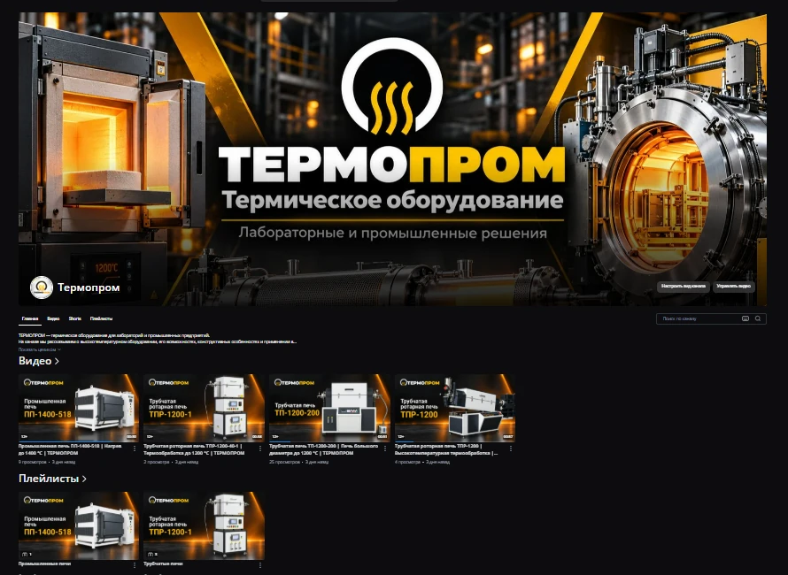

← Все проекты
Сайт · каталог · RUTUBE
ТЕРМОПРОМ
Корпоративный сайт, каталог и оформление RUTUBE-канала для производителя термического оборудования.
Похожий проектот 85 000 ₽
01 · Задача
Собрать сложный ассортимент оборудования в понятную структуру и сделать сайт современным, но не перегруженным.
02 · Что сделали
- Структура корпоративного сайта
- Каталог продукции и категории
- Адаптивная версия
- SEO-структура страниц
- Визуальная система и интерфейс
- Оформление RUTUBE-канала
03 · Результат
Единая визуальная система сайта, каталога и видеоканала — от карточек оборудования до оформления RUTUBE.
RUTUBE · оформление канала
Видеоканал в фирменном стиле ТЕРМОПРОМ.
Оформили обложку канала и визуальную подачу видеоматериалов так, чтобы RUTUBE продолжал стиль сайта и каталога: тёмная промышленная база, фирменные жёлтые акценты и единая подача оборудования.
Открыть канал ↗︎
AUREA · CASEНужен похожий
Нужен похожий
результат?
Расскажите о задаче — оценим объём и предложим формат без ненужных этапов.
Обсудить проект ↗︎